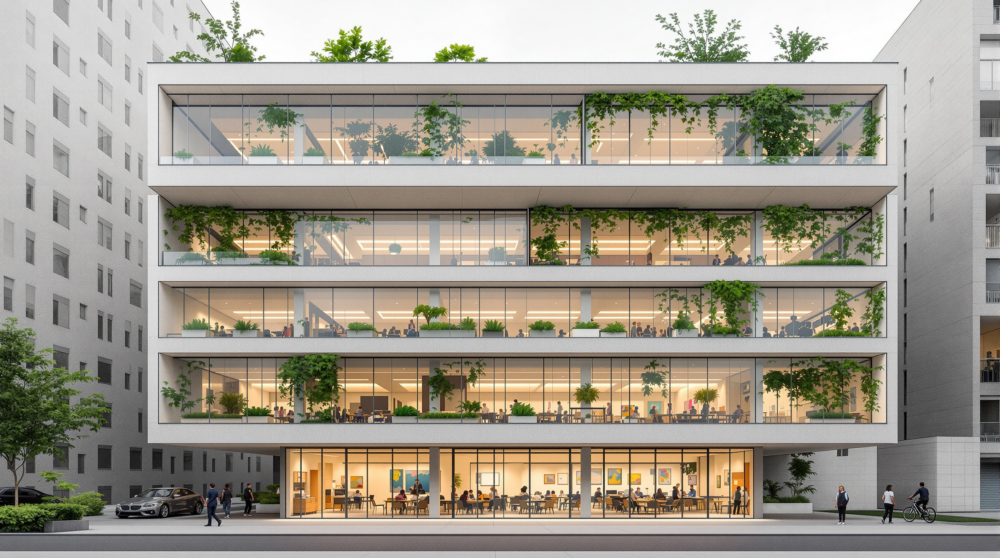

Autodesk Forma has a strange place in the AI-for-architecture conversation. It is on every list — Rendair ranks it second in their 2026 student guide, Coursiv folds it into their seventeen, the xpressrendering top-ten gives it a slot — and almost none of them say what it is. The shorthand "AI tool for architects" does Forma no favours, because Forma is not a render tool and the AI is not the headline. It is a cloud platform for the phase most rendering coverage ignores entirely: the feasibility and concept stage, before there is a model worth rendering.
We ran Forma for a week against a real mixed-use feasibility study — a four-storey residential block over ground-floor retail on a constrained urban site. The brief was the one the listicles never test: not "can it make a pretty image," but "does the AI change the decisions you make in week one of a project?" That is a harder question, and a more interesting one.
A cloud-based pre-design and early-stage planning platform, evolved from the Spacemaker acquisition and rebranded by Autodesk. Site context import, conceptual massing, and a stack of real-time environmental analyses — sun hours, daylight, wind, noise, operational energy — with a Revit interop path. The "AI" is mostly fast predictive analysis, not generative form-making.
What Forma actually is
Forma is the product Autodesk built out of Spacemaker, the Norwegian early-stage design startup it acquired in 2020. The rebrand to Forma landed in 2023, and by 2026 it sits inside the Autodesk AEC Collection alongside Revit, Civil 3D and the rest. Strip the branding and Forma is a browser-based environment for the first two weeks of a project: pull in real site context, sketch massing volumes, and immediately see how those volumes perform against sun, wind, noise and energy.
The part that earns the "AI" label is the analysis engine. Traditional environmental analysis — a proper wind study, a daylight-hours calculation — is a specialist task that takes hours or days and usually happens too late to change anything. Forma runs trained predictive models that return those results in seconds, live, as you push and pull the massing. That is the actual pitch, and it is a good one: the analysis moves to the moment the decision is being made instead of arriving as a post-rationalisation after it.
What the AI does well
Three things genuinely worked on our feasibility study, and each one changed a decision.
Real-time sun and daylight. Dragging the residential bar from five storeys to four and watching the courtyard's winter sun-hours update instantly is the single most useful thing Forma does. We caught an overshadowing problem on the neighbouring property in the first afternoon — the kind of thing that, on a normal job, surfaces in planning consultation three months later and forces a redesign. That alone is a defensible reason to have Forma in the stack.
Rapid wind and noise screening. Forma's wind analysis is a screening tool, not a CFD replacement, and it is honest about that. But for a concept-stage gut check — is this gap between buildings going to create a wind tunnel, is the road-facing facade going to need acoustic glazing — the speed matters more than the precision. We made two massing moves on the noise read alone.
Site context, done for you. Forma imports surrounding buildings, terrain and street data for most urban sites automatically. On a normal feasibility study that context model is a half-day of someone's time. In Forma it is a search box and a thirty-second wait. The time saved here is unglamorous and completely real.
Where it quietly stalls
Forma's ceiling is the same one every honest review hits: it is brilliant at evaluating form and weak at making it.
The generative side is thinner than the marketing. If you expect Forma to propose schemes — to do the generative-design thing where you set constraints and it returns options — you will be underwhelmed in 2026. The form-making is still you, pushing volumes. The AI grades your homework fast; it does not write the essay. That is fine once you know it, but it is not what "AI tool for architects" implies to a first-time user.
It is a feasibility tool, and it ends at feasibility. Forma takes you from empty site to a defensible massing with performance data behind it. Then you leave. The detailed design, the documentation, the rendering — none of that happens here. The Revit interoperability is real but it is a handoff, not a round-trip you will want to lean on repeatedly. Treat Forma as the front porch of the project, not the house.
The analysis is screening-grade. The wind, noise and energy numbers are directional. They are right for choosing between two massing options; they are not right for a planning submission or a building-physics sign-off. Architects who read the fast number as a final number will get burned, and that is a discipline problem the tool cannot solve for you.
Forma does not design the building. It tells you, in seconds, whether the building you just drew is a good idea — and that turns out to be most of the value in week one.
Forma vs the other early-stage tools
| Capability | Autodesk Forma | TestFit | Generic massing in Revit |
|---|---|---|---|
| Real-time environmental analysis | Excellent — sun, wind, noise, energy | Limited | None native |
| Automatic site context | Yes — one search | Partial | Manual |
| Generative scheme options | Weak | Strong — unit/yield solving | None |
| Speed to first informed massing | Fast | Fast | Slow |
| Path to documentation | Revit handoff | Revit/export | Native |
| Best for | Performance-driven concepts | Yield & feasibility math | Firms standardised on Revit |
The honest read is that Forma and TestFit are complements, not competitors. TestFit solves the yield-and-units math; Forma solves the environmental-performance and context math. A firm doing serious feasibility work in 2026 could justify both, and the overlap is small.
Who Forma is actually for
Firms that do real feasibility work. If your projects start with a site, a brief and a question about what is even possible, Forma earns its seat. Developers' architects, urban-scale practices, anyone whose week one is massing-and-performance rather than concept-sketching will get the most from it.
Practices already inside the Autodesk AEC Collection. If you are paying for the Collection, Forma is included, and not using it is leaving money on the table. The Revit handoff is most valuable to firms already standardised on Revit downstream.
Sustainability-led design teams. The real-time environmental feedback is the strongest argument for Forma, and the teams who care most about that feedback — passive design, daylight optimisation, energy-conscious massing — are the ones who will change the most decisions because of it.
The group it is not for: small residential and interiors practices looking for a render tool. Forma does not render, and the feasibility machinery is overkill for a single-house job. If your question is "how do I make a beautiful image of this," Forma is the wrong aisle entirely — look at the rendering tools instead.
How we would put Forma in a 2026 stack
- Week one, every site-driven project. Pull context, test three or four massing options against sun and noise, kill the bad ones before anyone falls in love with them. This is Forma's home turf.
- As an argument-maker in client and planning meetings. "Here is the overshadowing data behind why the block steps down on the north edge" is a far stronger position than "it felt right." Forma makes that case visually and fast.
- As the front of a Forma-to-Revit-to-render pipeline. Forma decides the massing, Revit documents it, your render tool of choice sells it. Three tools, three jobs, clean handoffs.
We test the whole pipeline, not just the render.
The ArchiGen AI journal runs the tools architects actually string together — from feasibility to documentation to the final image — and reports where each one earns its keep. No affiliate links, no sponsored placements.
Read the journal →Our take
Forma is the most misrepresented tool on the 2026 AI-for-architects lists, and the misrepresentation cuts both ways. It is not the generative-design magic the "AI tool" framing promises — you still make the form. But it is a genuinely excellent feasibility platform whose real-time environmental analysis changes decisions in the exact window where changing them is cheap. That is worth more than another render engine, and almost nobody writes about it because it does not produce a screenshot you can post.
Our recommendation is narrow and confident. If your work starts with a site and a feasibility question, and especially if you are already paying for the AEC Collection, Forma should be open on day one of every project. If your work is rendering, interiors or single-house residential, skip it without guilt — it is not built for you. The four-star rating is for what Forma is, not what the listicles pretend it is: the best fast-feedback pre-design tool we tested this year, with a generative ceiling it has not yet broken through.
Tested by Vista Studios across one week on a live mixed-use feasibility study. No affiliate relationship with Autodesk. Analysis results treated as screening-grade; not a substitute for specialist building-physics consultation.